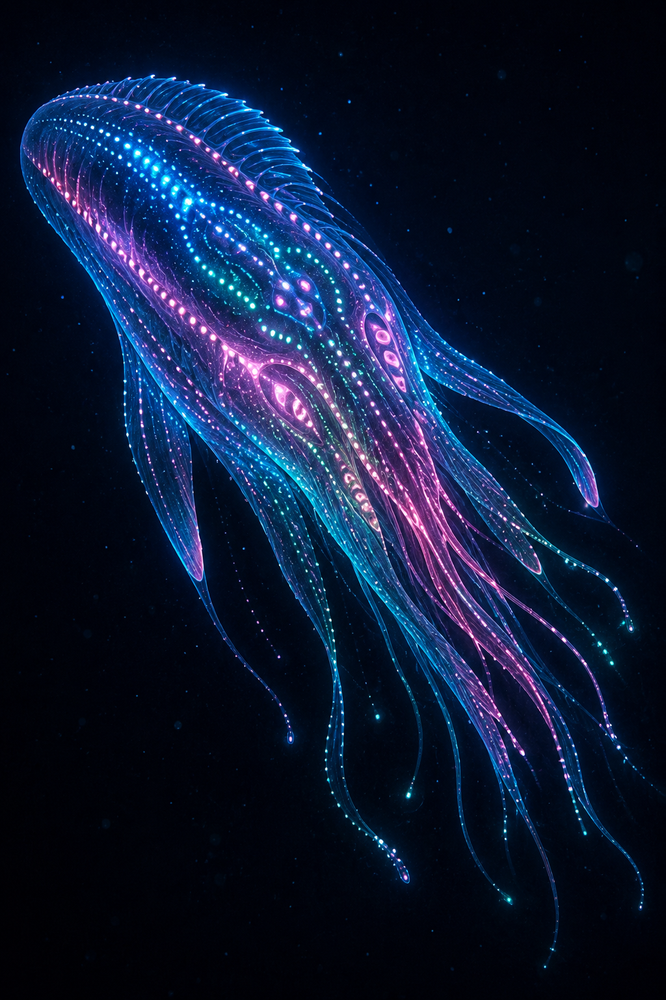

Глава 39: Разумный вид Moryn
«Там, куда не проникает свет, там, где вода весит как камень — там они танцуют. Их танец — это речь, их речь — это цвет, их цвет — это мысль.» — Посол Xha'Ruun к Moryn, +2 000 г. Э.Е.
Связанные разделы: → см. [Гл.05, «Xha'Ruun»], → см. [Гл.14, «Океаны»], → см. [Том II, Гл.14, «История трёх видов»], → см. [Том VII, Гл.7, «Биология Moryn»], → см. [Том VIII, Гл.6, «Океан Gharra»] Объём: 30 страниц
Введение
Moryn — третий разумный вид Théxar, населяющий беспросветные глубины океана Gharra. Там, где свет не достигает никогда, а давление воды измеряется сотнями атмосфер, Moryn построили цивилизацию, основанную не на звуке и не на письме, а на свете собственного тела.
Их существование — живое опровержение представления о том, что разум требует суши, огня и письменности. → см. [Том II, Гл.14, §14.3]

Илл. 39.0. Представитель вида Moryn — ART-000008. Схематичная векторная версия: ART-000005.
39.1 Открытие и статус
| Событие | Год (Э.Е.) |
|---|---|
| Первые наблюдения (с рыболовных судов, свечение в глубине) | ~−3 000 |
| Подтверждённый контакт (батискаф Гильдии Исследований) | −1 200 |
| Установление постоянной связи | −800 |
| Вступление в Совет Единства | +1 500 |
До подтверждённого контакта свечение в глубинах Gharra столетиями объяснялось как природное явление — «огни бездны», упоминаемые в мифологии Kharak и Rhuval. Лишь погружение батискафа Гильдии Исследований в −1 200 г. зафиксировало целенаправленный, реагирующий на присутствие наблюдателей характер свечения.
39.2 Среда обитания
ПРОФИЛЬ: Среда обитания Moryn
Параметр Значение Регион Глубоководная зона океана Gharra (Южный) Глубина 1 200–3 000 ша Давление 120–300 атм Температура 2–8°X Освещённость 0 (афотическая зона) Солёность Повышенная (придонные рассольные бассейны)
Moryn избегают шельфовых и приповерхностных вод — их физиология рассчитана на постоянное высокое давление, и подъём к поверхности для взрослой особи смертельно опасен (декомпрессионная травма). Основные поселения сосредоточены вокруг гидротермальных источников дна Gharra, дающих не только тепло, но и химическую энергию для хемоавтотрофных симбионтов, которыми питаются Moryn. → см. [Гл.14, §14.2, «Гидротермальные источники»]
39.3 Биохимия и физиология
| Параметр | Значение |
|---|---|
| Клеточная мембрана | Кремний-органическая (устойчива к давлению 300+ атм) |
| Метаболизм | В 3× медленнее Xha'Ruun |
| Оптимальная температура | 2–8°X |
| Источник энергии | Симбиотические хемоавтотрофные бактерии + фильтрация органики |
| Пигментация | Отсутствует (нет смысла при полном отсутствии света) |
39.3.1 Устойчивость к давлению
Кремний-органические мембраны Moryn функционально аналогичны решению, используемому у Kel'vash (→ см. [Гл.38, §38.3.2]), но служат противоположной цели: не защите от обезвоживания в сухой среде, а сохранению структурной целостности клетки под колоссальным гидростатическим давлением. Внутриклеточные жидкости Moryn изоосмотичны окружающей среде — организм не «сопротивляется» давлению, а уравновешивает его изнутри.
39.3.2 Медленный метаболизм и время
Метаболизм Moryn в 3 раза медленнее, чем у Xha'Ruun — адаптация к холодной, бедной энергией среде. Это напрямую формирует их восприятие времени: то, что для наблюдателя Xha'Ruun выглядит как неспешный «танец» световых узоров, для самих Moryn — обычный темп повседневного общения.
39.4 Биолюминесцентная коммуникация
КЛЮЧЕВОЙ ФАКТ
У Moryn нет разделения между «речью» и «письмом» в привычном смысле. Их язык — это последовательность цветовых узоров, генерируемых хроматофорными органами по всей поверхности тела, синхронизированная с движением. Xha'Ruun называют это «танцем», но для Moryn это единственная форма мышления, доступная для наблюдения извне.
| Компонент языка | Механизм | Аналог у Xha'Ruun |
|---|---|---|
| «Фонемы» | Дискретные цветовые вспышки (7 базовых оттенков) | Звуковые фонемы |
| «Синтаксис» | Последовательность и скорость смены цвета | Порядок слов |
| «Интонация» | Амплитуда и площадь свечения | Тон голоса |
| «Письменность» | Долговременные биолюминесцентные метки на скальных поверхностях (используются некоторыми колониями) | Письмо |
39.4.1 Биолюминесцентные органы
Свечение генерируется специализированными хроматофорными органами (аналог люминофорных клеток), распределёнными по телу неравномерно — наибольшая плотность на дорсальной стороне и вокруг сенсорных гребней. Спектр свечения — от глубокого синего (450 нм) до тёмно-красного (700 нм), причём Moryn способны различать оттенки, недоступные тетрахроматическому зрению Xha'Ruun даже с УФ-каналом (→ см. [Гл.05, §5.4.1]) — их фоторецепторы адаптированы к экстремально низкой освещённости и способны улавливать единичные фотоны.
39.5 Электрорецепция и навигация
В полной темноте электрорецепция дополняет биолюминесцентное зрение как основной канал ориентации:
| Применение | Дальность | Точность |
|---|---|---|
| Обнаружение биения «сердца» другой особи | до 40 ша | Высокая |
| Картирование рельефа дна | до 100 ша | Средняя |
| Обнаружение гидротермальных источников (по электрохимическому градиенту) | до 300 ша | Высокая |
Электрорецепторные органы Moryn на порядок чувствительнее рудиментарных аналогов Xha'Ruun (→ см. [Гл.05, §5.4.4]) — эволюционная необходимость в среде, где ни звук, ни свет солнца никогда не были доступны.
39.6 Общество и культура
Из-за особенностей биолюминесцентной коммуникации у Moryn отсутствует понятие «личной», непубличной мысли в том смысле, в каком его понимают Xha'Ruun — любое свечение видно всем присутствующим одновременно. Это привело к формированию сильно коллективистской, почти телепатической по восприятию Xha'Ruun культуры, где:
- Решения принимаются через синхронное «созвучие» цветовых узоров всей группы
- Понятие индивидуальной приватности выражается пространственно (уединение = физическое удаление от группы), а не информационно
- Искусство и религия Moryn построены на многослойных световых композициях, которые Xha'Ruun-наблюдатели описывают как «подводные симфонии цвета»
Продолжительность жизни: оценивается в 300–400 лет — среднее значение между Xha'Ruun (150–200) и Kel'vash (800–1 200), что соответствует промежуточной скорости их метаболизма.
39.7 Отношения с Xha'Ruun и Kel'vash
Контакт с Moryn сталкивается с тремя основными барьерами (→ см. [Том II, Гл.14, §14.3.3]):
- Языковой барьер — перевод между звуковым языком Xha'Ruun и биолюминесцентным языком Moryn требует специализированных устройств-транслюминаторов, установленных на глубоководных станциях Совета.
- Темпоральный барьер — восприятие времени Moryn (метаболизм в 3× медленнее) требует замедления диалога примерно втрое для взаимопонимания.
- Этический барьер — коллективистская, «прозрачная» этика Moryn (где скрытая мысль физически невозможна) плохо совместима с представлениями Xha'Ruun о личной автономии и приватности.
Несмотря на барьеры, Moryn — полноправный член Совета Единства с +1 500 г., и ни одно решение, касающееся океанов Théxar, не принимается без их участия.
39.8 Экологическая роль
Moryn занимают экологическую нишу глубоководной хемосинтетической зоны — среды, недоступной для фотосинтетической жизни и крайне враждебной для наземных форм. Их симбиоз с хемоавтотрофными бактериями гидротермальных источников делает Moryn ключевым звеном придонных экосистем Gharra, аналогично роли Xha'Ruun на суше. → см. [Гл.21, «Экосистемы»]
Итоги главы
Ключевые выводы:
- Moryn — кремний-мембранный, холодолюбивый разумный вид глубин океана Gharra (1 200–3 000 ша).
- Метаболизм в 3× медленнее Xha'Ruun; давление среды — 120–300 атм.
- Язык — биолюминесцентные цветовые узоры, синхронизированные с движением («танец-речь»).
- Электрорецепция — основной канал навигации в полной темноте, на порядок чувствительнее аналога Xha'Ruun.
- Общество коллективистское — публичность мысли делает индивидуальную приватность в основном пространственной.
- Продолжительность жизни: 300–400 лет. Член Совета Единства с +1 500 г.
Установленные факты (для CANON.md):
- Среда обитания: океан Gharra, 1 200–3 000 ша, давление 120–300 атм, T 2–8°X — ПОДТВЕРЖДЕНО
- Метаболизм: в 3× медленнее Xha'Ruun — ПОДТВЕРЖДЕНО (согласовано с Том VII, Гл.7)
- Коммуникация: биолюминесценция, 7 базовых цветовых «фонем» — ЗАФИКСИРОВАНО
- Продолжительность жизни: 300–400 лет — ЗАФИКСИРОВАНО
- Контакт: −1 200 (подтверждён), +1 500 (Совет Единства) — ПОДТВЕРЖДЕНО (согласовано с Том II, Гл.14)
Связь с другими главами:
- → см. [Гл.05, «Xha'Ruun»] — сравнение сенсорных систем
- → см. [Гл.14, «Океаны»] — физическая среда обитания
- → см. [Гл.21, «Экосистемы»] — роль в придонных экосистемах
- → см. [Гл.40, «Три вида — принцип согласия»] — сравнительный обзор
- → см. [Том II, Гл.14], [Том VII, Гл.7] и [Том VIII, Гл.6] — история контакта, глубокая биология, океан Gharra
Конец главы 39. Согласовано с CANON.md v0.3.0 и Том VII, Гл.7.